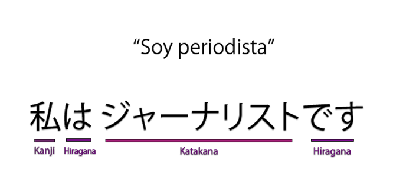

¡Bienvenido a FlashCards Kanjis!
Gracias a FlashCards Kanji, podrás consultar y estudiar los dos tipos de caracteres japoneses, Kana y Kanji. También podrás crear tus propias colecciones y ponerte a prueba de ellas.
Kana es un término que describe a los silabarios japoneses. Existen dos silabarios kana: la escritura cursiva moderna hiragana (ひらがな) y la escritura angular moderna katakana (カタカナ)
Los kanji son los sinogramas utilizados en el japonés. Los kanji se usan en su mayoría para expresar conceptos, a diferencia del chino, donde pueden emplearse también en su carácter fonético.A cada kanji le corresponde un significado y se usa como determinante de la raíz de la palabra; las derivaciones, conjugaciones y accidentes se expresan mediante el kana (sobre todo hiragana)
Un kanji puede tener diferentes pronunciaciones o lecturas, dependiendo del contexto, uso en combinación y su localización en la oración. Estas lecturas son categorizadas dependiendo de si provienen del chino original, onyomi (音読み) o si fueron adaptadas a la lengua nativa kunyomi (訓読み). La mayor parte de los kanjis poseen dos lecturas, una de kunyomi y otra de onyomi, con sus alteraciones fonéticas occidentales, pero algunos kanjis (muchos de ellos de uso diario) tienen diez o más posibles lecturas.
Aquí podemos ver una frase de ejemplo en la que se utilizan tanto Kanji como caracteres pertenecientes a ambos silabarios, katakana y hiragana, donde observamos como los tres tipos pueden combinarse en una única oración.